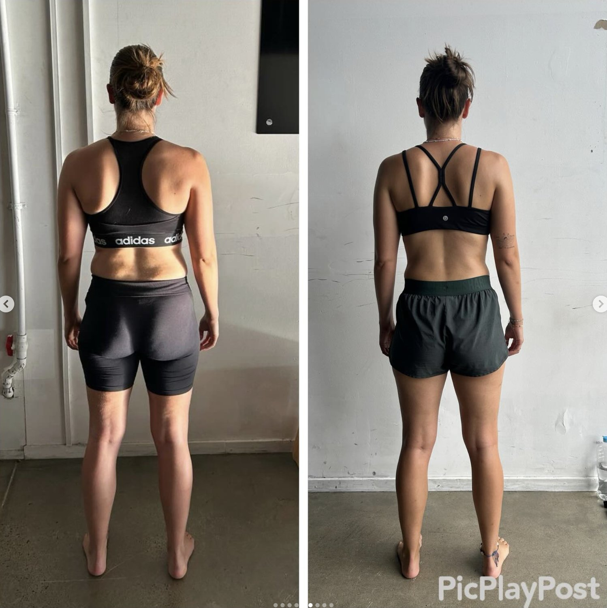

If you’ve been searching:
-
decompression for back
-
how to decompress lower back
-
spinal decompression exercises
-
back decompression at home
-
how to decompress your spine
You’re likely dealing with stiffness, disc irritation, or that heavy compressed feeling through the lower back.
The internet usually responds with one of two solutions: hang from a bar or lie over a foam roller.
Sometimes that gives relief.
But decompression isn’t just about pulling joints apart.
It’s about restoring force distribution.
And that’s where most advice misses the mark.

What Does “Back Decompression” Actually Mean?
Your spine doesn’t function as a stack of bones that need to be separated.
It functions as part of a dynamic pressure system.
Compression increases when:
-
Load is poorly distributed through the hips
-
The pelvis sits forward of the ribcage
-
Rotation is limited
-
Breathing mechanics are inefficient
In those cases, the lumbar spine absorbs more vertical force than it should.
People interpret that sensation as “compression.”
True decompression is not passive distraction.
It is restoring mechanical balance so pressure redistributes naturally.
Why Hanging or Stretching Only Works Temporarily
Hanging from a bar or performing traction can reduce compressive force briefly. Gravity assists in creating space between segments. Fluid shifts. Nerves feel less irritated.
But if the structure that created the overload hasn’t changed, compression returns as soon as you stand and walk.
That’s not failure.
That’s physics.
If pelvic alignment remains anteriorly shifted and hip internal rotation remains limited, the lumbar spine continues to overextend during gait.
Mechanical pattern overrides temporary relief.
This is why many people report:
“It feels better after I stretch, but it comes back the next day.”
Relief is not the same as resolution.


How to Decompress Lower Back Properly
Real spinal decompression occurs when force transfers efficiently through the trunk and hips.
That requires:
-
Coordinated ribcage positioning
-
Pelvic control under load
-
Rotational capacity
-
Proper contralateral gait mechanics
When rotation improves, compression reduces.
Instead of vertical loading accumulating at L4–L5 and L5–S1, force distributes diagonally through the system.
That’s structural decompression.
It happens through movement retraining — not passive stretching alone.
Back Decompression at Home: What Actually Helps
At home, most people try:
-
Foam rolling
-
Inversion tables
-
Child’s pose variations
-
Supine decompression drills
These can reduce tone and temporarily decrease perceived pressure.
But the more important question is this:
Why is the spine overloaded in the first place?
Often we see:
-
Prolonged sitting
-
Reduced hip extension
-
Loss of internal rotation
-
Ribcage flaring
-
Poor arm–leg integration when walking
If those variables aren’t addressed, “decompress spine exercises” remain surface-level solutions.
Decompression isn’t something you do for five minutes.
It’s something your body earns through efficient mechanics.
How We Approach Spinal Decompression in Brisbane
At Functional Patterns Brisbane in Bulimba, we don’t isolate the spine first.
We assess the system.
That includes:
-
Gait analysis
-
Pelvic rotation timing
-
Hip internal rotation under load
-
Ribcage–pelvis relationship
-
Breathing mechanics
-
Trunk stiffness regulation
Our goal is to restore mechanical economy.
When the system distributes force correctly, the lumbar spine stops acting as the primary shock absorber.
Compression reduces as a consequence.
This approach is especially effective for people dealing with:
-
Disc bulges
-
Chronic lower back stiffness
-
Recurring “tight” back muscles
-
Compression that worsens with sitting
-
Athletes who feel jammed through the lumbar spine

How to Decompress Your Spine While Sleeping
Many people search for ways to decompress the spine during sleep.
Sleeping posture can influence overnight symptoms, especially if extension bias is present.
However, sleep is not where structural correction happens.
If your waking mechanics repeatedly compress the lumbar spine, eight hours of positioning won’t override sixteen hours of movement.
Sleep posture matters.
But movement patterns matter more.
When Should You Seek Help?
If you feel:
-
Persistent lower back compression
-
Pain that improves lying down but returns standing
-
Heaviness through the lumbar spine
-
Recurring disc irritation
-
Sharp pain with spinal extension
And you’ve already tried stretching, traction, or passive therapies without lasting change, it’s likely a structural loading issue.
That’s where proper assessment becomes important.
Back Decompression Treatment in Brisbane
At Functional Patterns Brisbane, we specialise in restoring:
-
Rotational capacity
-
Hip internal rotation
-
Trunk–pelvis integration
-
Efficient gait mechanics
We don’t manually “pull” your spine apart.
We retrain your body so it no longer compresses itself.
That’s long-term decompression.
If you’re in Brisbane and dealing with lower back compression, you can book an Initial Assessment at our Bulimba studio.
Or reach out directly and we’ll tell you honestly whether we’re the right fit.